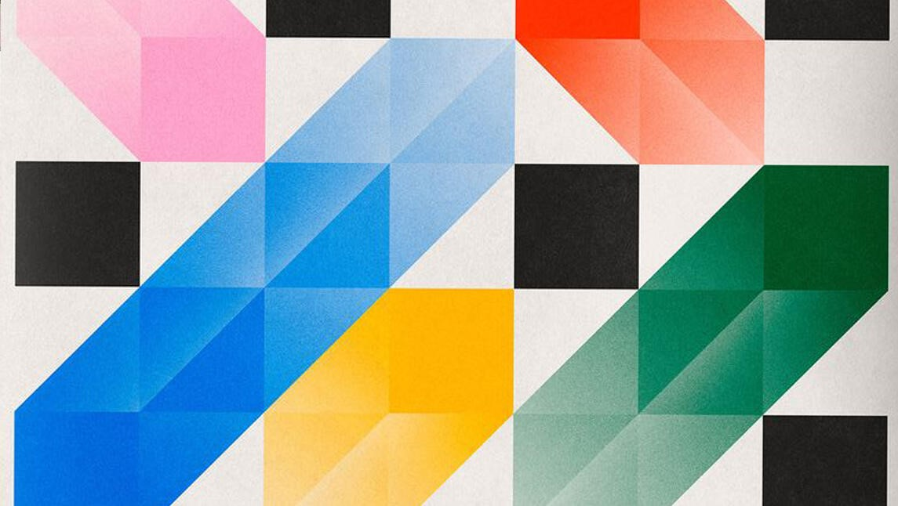

La Geometría Universal es el lenguaje de programación del superordenador que procesa todo lo que ocurre en el Universo. “Geo” refiere a tierra y “metría” a métrica o ritmo: geometría son “los ritmos de la tierra”.
La Geometría Universal, el sonido y la luz conforman la Santa Trinidad, y su función es dar un plan para la experimentación en el Universo. La geometría establece el soporte para que los mundos y sus realidades sucedan. Podemos decir que, antes de cualquier traza de materia, existe un código basado en matemática y geometría que estructura y organiza todo.
En las categóricas palabras de Galileo Galilei, las matemáticas son el lenguaje en el que Dios escribió el Universo. Digamos que Dios geometriza. Es decir, detrás de la escena que percibimos con nuestros cinco sentidos, existe una vastísima compilación de códigos numéricos y geométricos que sirven como lenguaje base de todas las escalas de la creación. Detrás del gesto que usted está haciendo en este momento, mientras lee, hay un procesamiento geométrico que lo orquesta.
Estamos insertos en una realidad digital cuyo lenguaje de programación es la geometría. No solo eso, sino que además el Universo se sirve de un recurso muy elegante para replicar el código Geometría Universal en todas las escalas de la creación: la fractalidad, el medio para ver el infinito.